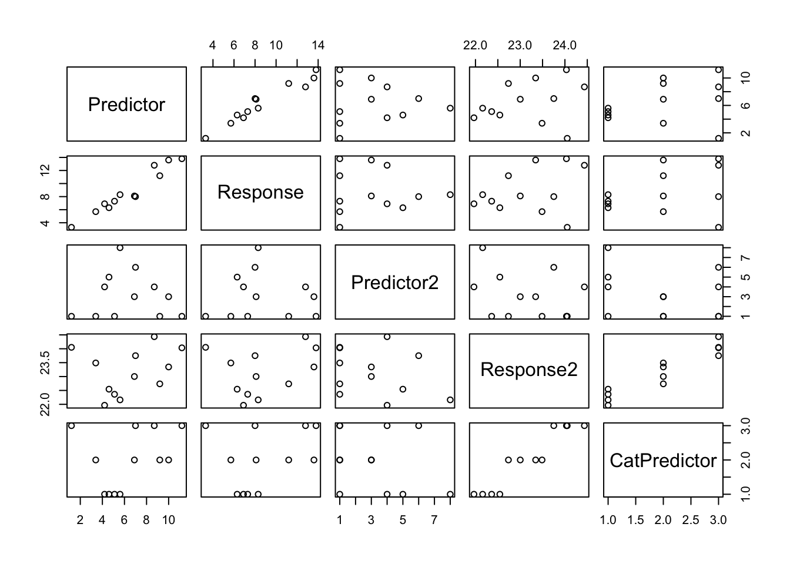
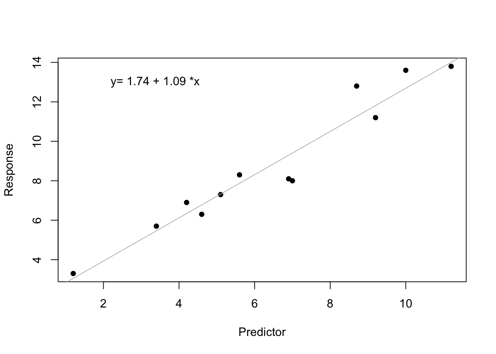
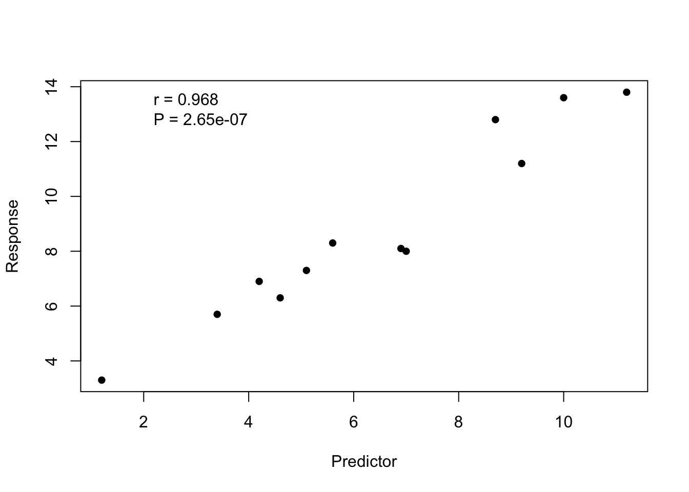

A regression analysis is a statistical in which you find the best fit line to the data, and then test whether the slope and y-intercept are significantly difference from zero (or another value). To test whether the slope is difference from zero, you can use an analysis of variance or a t test. To test the intercept, you can use a t test. You already know how to do a t test and analysis of variance. So, really the only new information is how to find the line that best fits the data.
You can anwser one or two-sided hypotheses. You can use a two-tailed t test or an analysis of variance to answer two-sided questions. If you want to answer one-sided questions, then you must use a one-tail t test. Let’s start with a two-sided question.
You can also test whether a slope is different from value other than zero with t test.
You use a regression analysis when both the response and predictor variables are numeric. Data are typically entered into Excel, similar to an ANOVA. Each column will represent a variable, and each row will represent an observation.
For this lab, you will practice regression analysis. You explored the F distribution last week, and the t disribution several weeks ago. If you do not remember the F distribution, and how the parameters, degrees of freedom, affect the shape of the F distribution, then look over the ANOVA lab. If you do not remember the t distribution, and how the parameter, degrees of freedom, affects the shape of the t distribution, then look over the t-test lab.
The method you learned in class to find the line of best fit is called least squares—you find the smallest (least) value for the sum of the squared (squares) deviates. Remember that you can find the slope by calculating the sum of cross products, and dividing by the sum of squares for the predictor variable.
Remember that both the response and predictor variables must be continuous.
The sum of the cross products is each value for the predictor variable subtracted from the mean of the predictor variable multipled by each value for the response variable subtracted from the mean of the response variable. You then sum all these values up.
\[{SS}_{xy} = \Sigma_{i=1}^{n} (X_i - \bar{X}) \times (Y_i - \bar{Y})\]
You already know how to caculate the sum of squares for the predictor.
\[slope = b = \frac{{SS}_{xy}}{{SS}_x} = \frac{s_{xy}}{s^2_x}\]
\[intercept = a = \bar{Y} - \bar{X} \times b\]
Remember that \(a\) is the estimate of the true intercept of the population \(\alpha\), and \(b\) is the estimate of the true slope of the population \(\beta\).
So, let’s try it. Caculate the slope and intercept for the line of best fit. Use the data below.
| Predictor | Response |
| 4.2 | 6.9 |
| 5.6 | 8.3 |
| 5.1 | 7.3 |
| 4.6 | 6.3 |
| 9.2 | 11.2 |
| 6.9 | 8.1 |
| 10.0 | 13.6 |
| 3.4 | 5.7 |
| 7.0 | 8.0 |
| 11.2 | 13.8 |
| 1.2 | 3.3 |
| 8.7 | 12.8 |
You can use the functions cov() and var() to find the covariance and the variances, respectively. Remember that the variances and covariance are just the sum of squares and the sum of the cross products divided by the degrees of freedom. Because you divide both by the degrees of freedom, dividing the sum of the cross products by the sum of squares of the predictor is the same thing as dividing the covariance by the variance of the predictor. In the example below, I entered the data into a data.frame() called reg.data. I named the first column “Predictor” and the second column “Response”. You should know how to do this, so I do not provide the code so you can practice.
var(reg.data$Predictor)## [1] 8.743864R can make your life even easier, because R will calculate all the variances and covariances of all the variables in a data.frame. You just need to give function var() or cov() a data.frame as the argument. The matrix that is returned is called the variance-covariance matrix. Along the diagonal are the variances, and the off-diagonal values are the covariances (that is why it is called the variance-covariance matrix!).
#var and cov both give the same answer
var(reg.data)## Predictor Response
## Predictor 8.743864 9.573409
## Response 9.573409 11.194773cov(reg.data)## Predictor Response
## Predictor 8.743864 9.573409
## Response 9.573409 11.194773Now that you have found the line of best fit, you can test whether the slope is significantly different from zero. Calculate by hand the sum of squares for the regression, sum of squares of the residuals, and the total sum of squares. Now calculate the degrees of freedom, mean squares, the F-ratio, and the P-value.
\[ {ss}_{regression}=\Sigma_{i=1}^{n} ((a + b \times X_{i})-\bar{Y})^{2} \]
\[ {ss}_{residuals}=\Sigma_{i=1}^{n} (Y_{i}-(a + b \times X_{i}))^{2} \]
\[ {ss}_{total}=\Sigma_{i=1}^{n} (Y_{i}-\bar{Y})^{2} \]
\[{df}_{regression} = 1\]
\[df_{residuals} = n - 2\]
\[df_{total} = n -1\]
You can now calculate the means squares for the regression and residuals, the F-value, and P-value. What do you conclude about the slope?
Of course R will do all these calculations for you. As you learned for ANOVA last week, you can use a linear model for regression analyses. We first save the linear model, and then use the function summary() or the function anova().
fit<-lm(Response~Predictor,data=reg.data)
summary(fit)##
## Call:
## lm(formula = Response ~ Predictor, data = reg.data)
##
## Residuals:
## Min 1Q Median 3Q Max
## -1.4045 -0.5110 0.1064 0.4615 1.5342
##
## Coefficients:
## Estimate Std. Error t value Pr(>|t|)
## (Intercept) 1.74045 0.63407 2.745 0.0207 *
## Predictor 1.09487 0.09031 12.124 2.65e-07 ***
## ---
## Signif. codes: 0 '***' 0.001 '**' 0.01 '*' 0.05 '.' 0.1 ' ' 1
##
## Residual standard error: 0.8857 on 10 degrees of freedom
## Multiple R-squared: 0.9363, Adjusted R-squared: 0.9299
## F-statistic: 147 on 1 and 10 DF, p-value: 2.653e-07anova(fit)## Analysis of Variance Table
##
## Response: Response
## Df Sum Sq Mean Sq F value Pr(>F)
## Predictor 1 115.298 115.298 146.98 2.653e-07 ***
## Residuals 10 7.844 0.784
## ---
## Signif. codes: 0 '***' 0.001 '**' 0.01 '*' 0.05 '.' 0.1 ' ' 1The model statement for lm() is Response ~ Predictor. Because both of the variables are numeric, R performs the correct analysis—a regression analysis. Piece of cake.
So what does the output mean?
You should understand the general output from both functions. For the output from summary() R gives you information about the residuals, and coefficients. The estimate of the coefficients are the intercept and the slope for the line of best fit. You can also get this information by typing the name you gave to the lm model. In the example above, I called it fit. The information to the right of the estimates is about the t-test. This information tells you whether the intercept or slope is significantly different from zero. The test is a two-tailed test. Because you understand the difference between a one- and two-tailed t-test, you can easily calculate the P-values for a left or right one-tailed one-sided test. The output from anova() is similar to what you saw last week. However, it only tells you whether the slope is significantly different from zero. It doesn’t give you the estimate for the slope, and no information about the intercept.
With any linear model you fit in R, you can also ask for additional information from the model. Just like a data.frame, there are data assigned to different names of the linear model object. As with any object in R, you can ask for the names of data associated with an object by using the function names().
names(fit) #Recall that "fit" is the name I gave the lm model## [1] "coefficients" "residuals" "effects" "rank"
## [5] "fitted.values" "assign" "qr" "df.residual"
## [9] "xlevels" "call" "terms" "model"fit$residuals #Gives the residuals## 1 2 3 4 5 6
## 0.56108960 0.42826918 -0.02429496 -0.47685910 -0.61326905 -1.19506407
## 7 8 9 10 11 12
## 0.91083357 0.23698698 -1.40455124 -0.20301250 0.24570478 1.53416682fit$coefficients #Gives the slope and intercept## (Intercept) Predictor
## 1.740449 1.094872Because we are already familar with the reg.data, let’s just use it to practice correlations. Remember that the difference between correlation and regression is somewhat subjective. You should use a regression analysis if you think there is cause and effect relationship, or want an equation to predict the response variable from the predictor variable.
You first need to calculate the correlation coefficient by dividing the covariance by the standard deviation of X and the standard deviation of Y.
\[r = \frac{cov_{xy}}{s_x s_y}\]
Remember that \(r\) is the estimate of \(\rho\) (rho). This calculation should be very easy for you because you know how to calculate the covariance and the standard deivation of a variable.
You can now use a t-test to determine whether \(r\) is significantly different from zero. The calculation for the t-value is below and the degrees of freedom are \(n - 2\).
\[t = \frac{r}{ \sqrt{\frac{1-r^2}{n-2}} } \]
Now that you have a t-value and the degrees of freedom, you can calculate the P-value for one- or two-tailed test. Make sure to calculate these values so that you can compare them to what R gives you.
Test of the Pearson Moment Correlation Coefficient is sensitive to the assumption of normality and outliers.
The function cor.test() will perform a correlation analysis. The default is a Pearson moment correlation, two-sided t-test. However, you can change the arguments to perform one-tailed tests or non-parametric alternatives. Let’s start with the default test. Notice that unlike regression, it doesn’t matter which variable is the “response” and which is the “predictor” because you are just testing for an association (not the relationship).
cor.test(reg.data$Predictor, reg.data$Response)##
## Pearson's product-moment correlation
##
## data: reg.data$Predictor and reg.data$Response
## t = 12.124, df = 10, p-value = 2.653e-07
## alternative hypothesis: true correlation is not equal to 0
## 95 percent confidence interval:
## 0.8854130 0.9911306
## sample estimates:
## cor
## 0.9676255#Same as above
cor.test(reg.data$Response, reg.data$Predictor)##
## Pearson's product-moment correlation
##
## data: reg.data$Response and reg.data$Predictor
## t = 12.124, df = 10, p-value = 2.653e-07
## alternative hypothesis: true correlation is not equal to 0
## 95 percent confidence interval:
## 0.8854130 0.9911306
## sample estimates:
## cor
## 0.9676255Because we are using a t-test to determine whether the correlation coefficient is different from zero, you can test one-sided hypotheses. Below is an example of testing the alternative hypothesis that the correlation is negative. Given that we already know the correlation is positive because of the analyses above, you should expect to find a relatively large P-value. Of course, you choose a one- or two-tailed test before collecting the data and only analyze the data with the pre-determined test.
cor.test(reg.data$Predictor, reg.data$Response, alt = "less")##
## Pearson's product-moment correlation
##
## data: reg.data$Predictor and reg.data$Response
## t = 12.124, df = 10, p-value = 1
## alternative hypothesis: true correlation is less than 0
## 95 percent confidence interval:
## -1.0000000 0.9890686
## sample estimates:
## cor
## 0.9676255If we are concerned that our data do not meet the assumptions of the t-test (e.g., the data are non-normal), then we can use a Spearman’s rank test. Just change the argument method from the default “pearson” to “spearman”.
cor.test(reg.data$Predictor, reg.data$Response, method = "spearman")##
## Spearman's rank correlation rho
##
## data: reg.data$Predictor and reg.data$Response
## S = 12, p-value < 2.2e-16
## alternative hypothesis: true rho is not equal to 0
## sample estimates:
## rho
## 0.958042The function plot() is very handy. You have seen that it already knows, based on the types of variables, which type of graph to produce. You can also use it on a data.frame to quickly inspect your data. To illustrate this, I am going to add a few variables to our data reg.data.
#Create some more fake data
reg.data2 <- data.frame(reg.data, Predictor2 = rpois(12, 3), Response2 = sort(rnorm(12, 23)), CatPredictor = gl(3, 4, labels = c("Low", "Med", "High")))
#Plot the all the fake data
plot(reg.data2)
How awesome is that! I just watched the Lego movie with my children, Gavin and Gabriel, and they told me to sing the song “Everything is awesome”. So, I am doing that right now!
The plot above is typically used to quickly check out the data, and not for publication. Below are types of graphs that researchers often publish with their regression or corelation analyses.
Data appropriate for a regression analysis are typically graphed with a scatterplot. If you are doing a regression analysis and the slope is significant, then you should plot the line of best fit. If the slope is not significant, then it is best to exclude the line of best fit from the graph. Use the function plot() to generate a scatterplot of these data.
You can add the line of best fit with the function abline(). You have already used a linear model to calculate the line of best fit—recall that I named it “fit” up above.
plot(Response ~ Predictor, data = reg.data, pch = 16)
abline(fit, col = "grey")
#I pull the values for the best fit line from fit to display on the graph
i <- round(fit$coef[[1]], 2) #i for the intercept
s <- round(fit$coef[[2]], 2) #s for the slope
text(2, 13, paste("y=", i, "+", s, "*x"), pos = 4)
Data appropriate for a correlation analysis are also graphed with a scatterplot, but you never plot the line of best fit (because there isn’t one).
plot(Response ~ Predictor, data = reg.data, pch = 16)
#I pull information out of cor.test to display on the graph
corInfo <- cor.test(reg.data$Predictor, reg.data$Response)
text(2, 13, paste("r = ", signif(corInfo[["estimate"]], 3), "\nP = ", signif(corInfo[["p.value"]], 3), sep = ""), pos = 4) #\n returns to next line